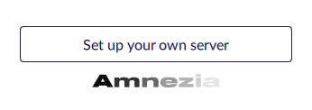
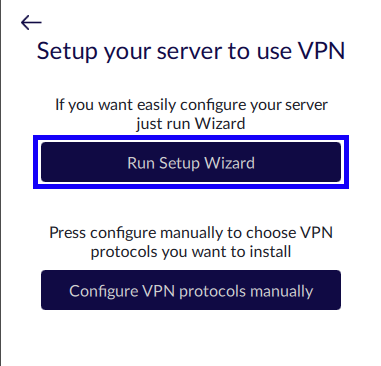
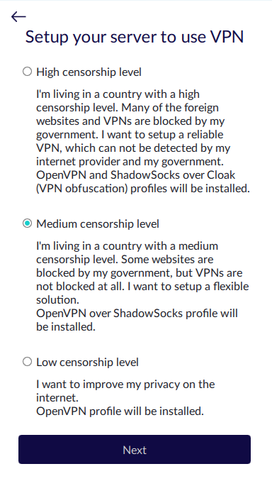
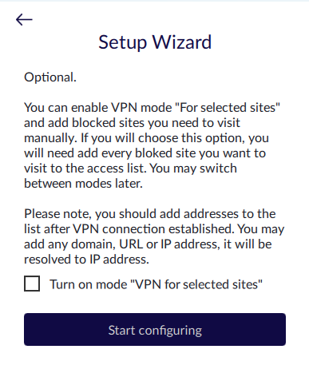

Installing with the Setup Wizard
EnglishEn

The VPS provider will send you the connection details by email:
| Server IP: | 192.565.ххx.xxx |
| User name: | root (or other) |
| Password or SSH-key: | 2f9legf2... |
Install Amnezia client and run it.

On the first screen select Set up your own server
Enter the connection data and click Connect

If the username is not specified, enter root
*if you changed the port for SSH, specify it with a colon after the IP
**if you have an SSH key instead of a password, select “Connect using SSH key”
Choose an installation option
Select Run Setup Wizard

Run Setup Wizard is a simple installation.
Next, you should choose the most suitable protection option.
When selecting Configure VPN protocols manually
you will be able to choose
protocol from the list and additional settings
*If you want to use manual configuration or install other VPN protocols such
as Wireguard or IKEv2 (IPsec)
use Configure VPN protocols manually, you can also add these protocols later after installation.
Run Setup Wizard
You are not obliged to use the protocol that you are currently installing.
After installation, you can remove unnecessary protocols and add new ones.
If your region has a very high level of censorship, and both sites and VPN services are blocked, we advise you to choose
High censorship level, from the first connection, because if you have a VPN, your VPS address
may be blocked.

High censorship level. Designed for situations where you do not want your traffic to be detected as VPN communication.
A container with
OpenVPN и Cloak will be installed on the
server.
Medium censorship level. A relatively flexible solution for cases where websites are blocked but not VPN. In this case, a container with
OpenVPN и ShadowSocks will be installed on the server.
Low censorship level. For simply obtaining a VPN for traffic encryption (classic VPN). In this case, a container with
OpenVPN will be installed on the server.
*keep in mind that usually the more secure the connection, the lower the traffic speed
In the next window, you will be asked which websites you would like to use the VPN for
Выберете Run Setup Wizard

You can use the VPN for all websites, for all except the selected ones, or only for the selected ones.
You will also be able to return to this setting after the connection is established.
Done! You have created your personal VPN
Now you can bypass site blocks,
protect your data, share your
VPN with people you trust without restrictions, add new protocols and much more.
If you want to learn more about Amnezia's functionality or have questions,
please see our
detailed
instructions,
visit the
FAQ
section, or
contact us by mail support@amnezia.org.